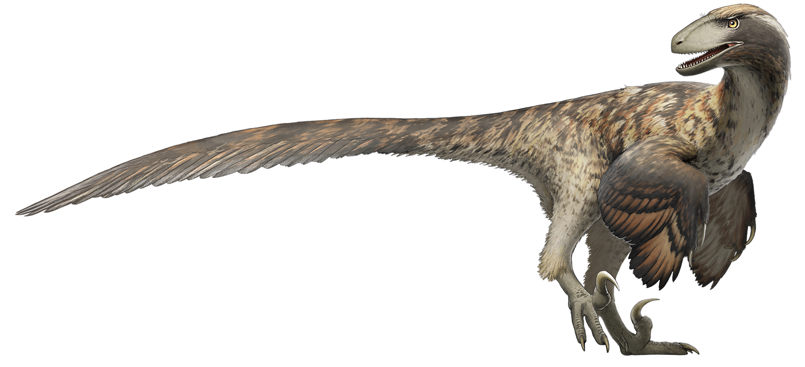
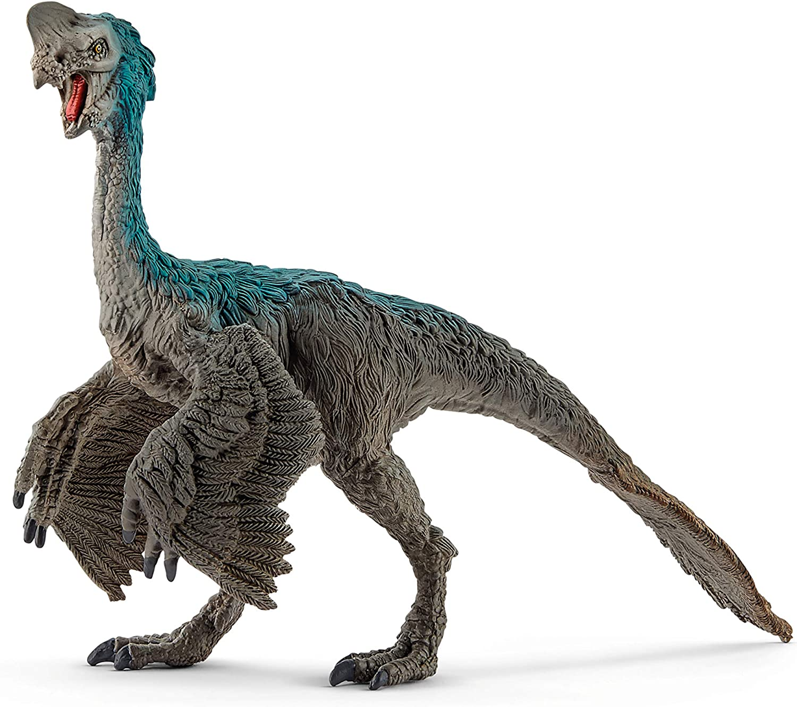
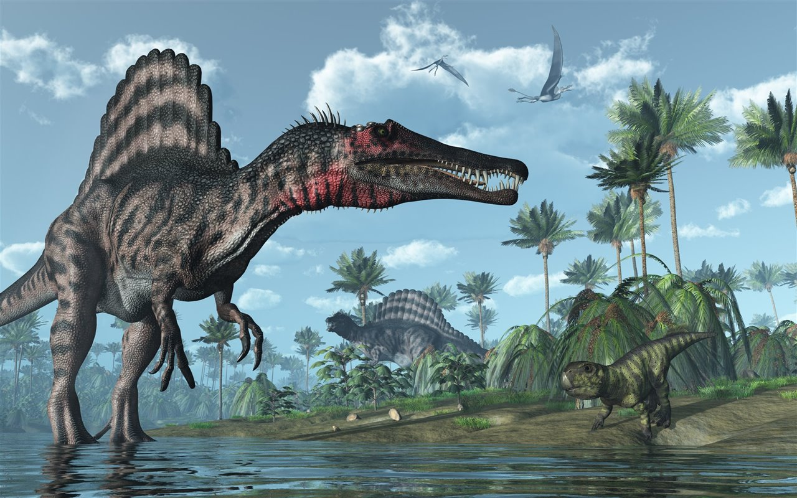
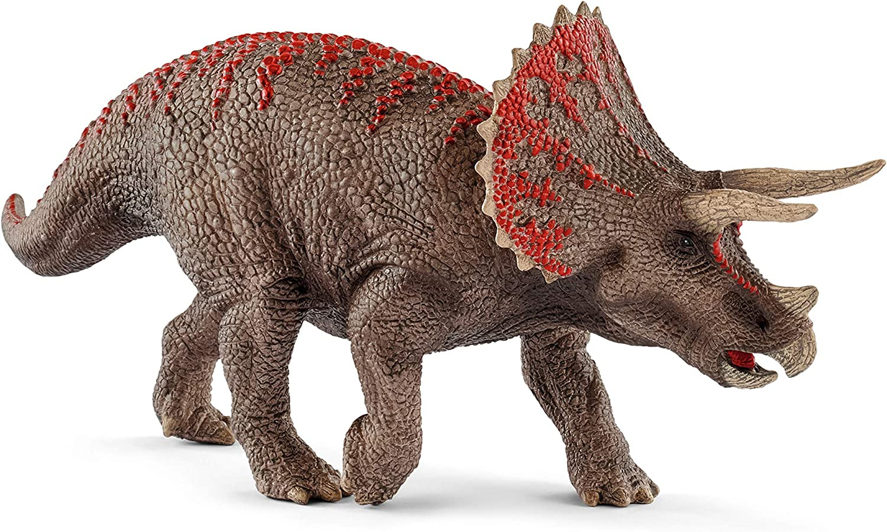

Carnotaurus sastrei (lat. "toro carnívoro de Anselmo Sastre"),1 o carnotauro en castellano es la única especie conocida del género extinto Carnotaurus de dinosaurio terópodo de la familia Abelisauridae, del período Cretácico, hace aproximadamente entre 72 a 69,9 millones de años, desde el Campaniense al Maastrichtiense, en lo que hoy es Sudamérica.2 Lo más notable de este dinosaurio son sus dos pequeños cuernos sobre los ojos en su pequeña cabeza, siendo el primer carnívoro que mostrara cuernos bien formados y definidos. También se hallaron impresiones de la piel que presentaban pequeños osteodermos, escudos óseos.1 Carnotaurus es un miembro avanzado de la familia Abelisauridae, un grupo de grandes terópodos que ocuparon el nicho de gran depredador en las masas de tierras que conformaron Gondwana durante finales del Cretácico, ocupando el lugar de los tiranosáuridos luego de la desaparición de los carcarodontosáuridos y neovenatóridos.
Junto con el género Abelisaurus dieron a conocer una familia completamente nueva de predadores mesozoicos, los abelisáuridos, lo que llevó a la revisión taxonómica de muchos otros géneros de difícil clasificación con el engrandecimiento del clado ceratosauria y a una visión distinta sobre la fauna gondwánica a finales de la época de los dinosaurios.1 Su nombre proviene del latín carō, carnis, "carne", y taurus, "toro", y le fue dado por ser un carnívoro con aspecto de toro, debido a los apéndices de su cabeza que tienen en forma de cuernos. El nombre de la especie "sastrei" le fue otorgado en honor a Anselmo Sastre, dueño de la estancia en la provincia argentina de Chubut, donde fue hallado el primer y único espécimen.
Los hábitos alimenticios de Carnotaurus aún no están claros para los investigadores, aunque algunos estudios de la morfología craneal sugieren que el animal era capaz de cazar presas muy grandes, como los saurópodos, otros estudios encontraron que se alimentaba principalmente de animales relativamente pequeños. Lo que si se sabe es que Carnotaurus se adapta muy bien para correr y fue posiblemente uno de los terópodos más rápidos de gran tamaño.
 |
 |
|
|  |
 |
 |